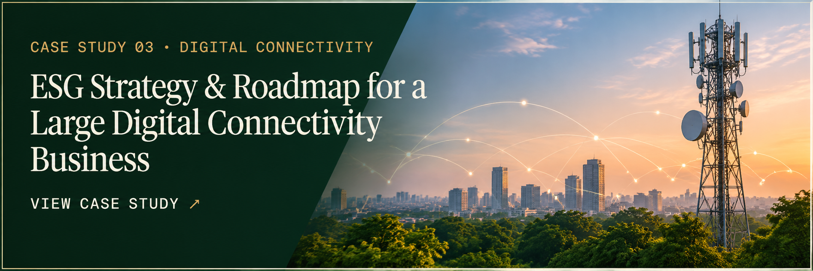

01.
Business Context
Understand the organisation, its operations and strategic priorities.
AREA 02 / 09
ESG · CLIMATE · SUSTAINABILITY
Translate ESG priorities into measurable strategies and actionable roadmaps.
My experience includes contributing to ESG strategy and roadmap engagements that translate priority sustainability matters into clear direction, measurable targets and long-term priorities.
GOVERNANCE FRAMEWORK
STRATEGIC DIRECTION → MEASURABLE ACTION
A PRACTICAL FLOW
Understand the organisation, its operations and strategic priorities.
Connect assessment findings with the organisation’s most relevant ESG matters.
Engage relevant stakeholders and business functions to shape and validate priorities.
Translate priority topics into a clear direction aligned with business ambitions.
Define measurable performance indicators and targets for priority areas.
Embed accountabilities, actions and review mechanisms into implementation.
SELECTED EXPERIENCE
 CASE STUDY 01 · POWER & UTILITIESESG Strategy & Target Setting for a Large Power & Utilities EnterpriseVIEW CASE STUDY ↗
CASE STUDY 01 · POWER & UTILITIESESG Strategy & Target Setting for a Large Power & Utilities EnterpriseVIEW CASE STUDY ↗ CASE STUDY 02 · REAL ESTATEESG Strategy & Roadmap for an Emerging Real Estate PlatformVIEW CASE STUDY ↗
CASE STUDY 02 · REAL ESTATEESG Strategy & Roadmap for an Emerging Real Estate PlatformVIEW CASE STUDY ↗
CASE STUDY 03 · LARGE DIGITAL CONNECTIVITY BUSINESSESG Strategy & Roadmap for a Large Digital Connectivity BusinessVIEW CASE STUDY ↗Professional Experience Note This experience reflects my professional contributions to engagements undertaken during my employment with EY. Client identities and engagement-specific information are anonymised and generalised to respect confidentiality and professional obligations. The views presented are personal and do not represent EY or its clients.
← Back to all areas of expertise